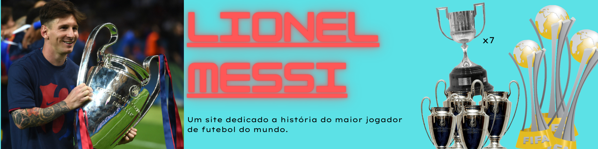
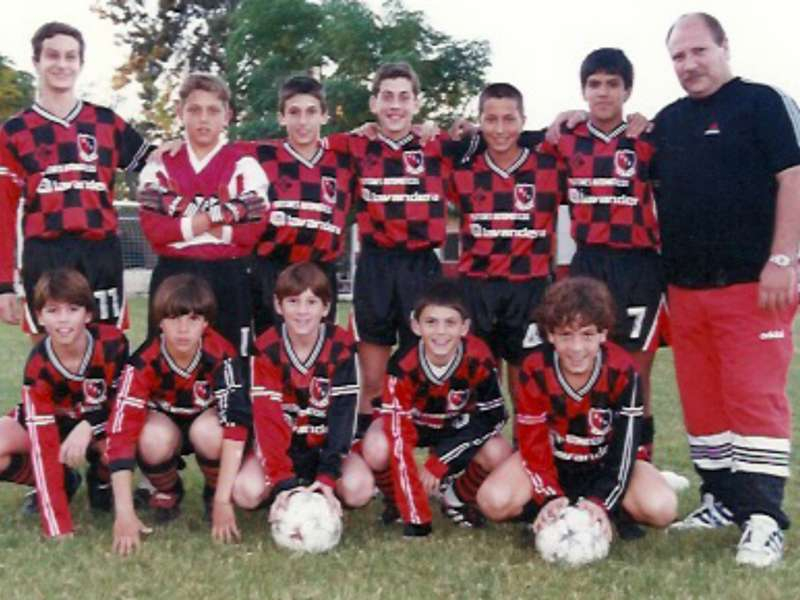
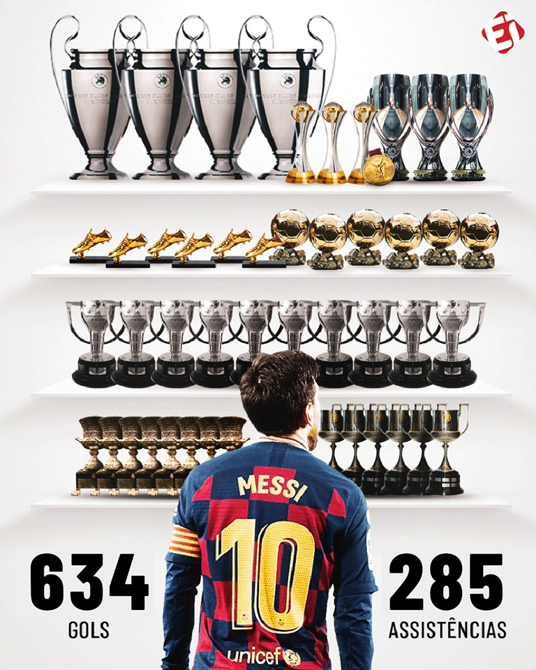
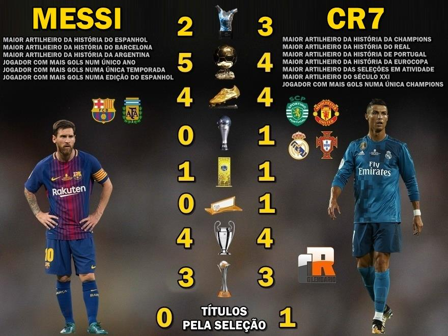

__________________________________________________________________________________________________________________________________________________________________________________________________________
Origens

Filho de Jorge Messi e Celia Cuccittini, desde criança demonstrava grande apego à bola, a ponto de negar-se a ir às compras com a família quando não lhe deixavam levar alguma bola.Daria seus primeiros passos nas categorias menores do Abanderado Grandoli, um pequeno clube onde os outros membros da família já haviam jogado - o endereço era a quinze quadras da casa dos Messi. Entrou para a equipe após ser chamado pelo velho treinador para completar o time para uma partida. Tinha apenas quatro anos.
Posteriormente, seu pai, Jorge, seria seu treinador na categoria baby do Grandoli. Lionel conseguia se sobressair com garotos de até sete anos. No entanto, o garoto não duraria muito tempo na equipe: os pais o tiraram do clube após não lhes deixarem acompanhar um jogo do filho por falta de dinheiro para pagar os ingressos. Quando completou sete anos, ingressou então nas divisões menores do clube do coração, o Newell's Old Boys. Ainda assim, não se contentava em jogar na Lepra, jogando regularmente futebol na rua da casa ao lado dos irmãos mais velhos Matías e Rodrigo Messi e dos primos maternos Emanuel e Maxi Biancucchi Lionel àquela altura conseguia jogar contra adversários de dezoito anos.
Porém, com onze anos detectou-se um problema hormonal que retardava o desenvolvimento ósseo de Messi e, consequentemente, seu crescimento. Por um ano e meio, o tratamento de 900 dólares mensais,que consistia em injeções alternadas em cada perna toda noite, foi custeado pela fundação onde seu pai trabalhava, até que a fonte secou. Como o Newell's não quis custear a continuação do tratamento, o pai ofereceu o filho ao River Plate. O interesse do clube da capital fez com que o Newell's voltasse atrás, mas de forma insuficiente, oferecendo duzentos pesos ao mês.
__________________________________________________________________________________________________________________________________________________________________________________________________________
Carreira no Barcelona

Títulos pelo Barcelona
Mundial de Clubes da FIFA: 2009, 2011, 2015
>Liga dos Campeões da UEFA: 2005–06, 2008–09, 2010–11, 2014–15
>Supercopa da UEFA: 2009, 2011, 2015
>Campeonato Espanhol: 2004–05, 2005–06, 2008–09, 2009–10, 2010–11, 2012–13, 2014–15, 2015–16, 2017–18, 2018–19
>Copa del Rey: 2008–09, 2011–12, 2014–15, 2015–16, 2016–17, 2017–18, 2020–21
>Supercopa da Espanha: 2005, 2006, 2009, 2010, 2011, 2013, 2016, 2018
Campanhas de destaque pelo Barcelona
>Mundial de Clubes da FIFA - Vice-campeão: 2006
>Liga dos Campeões da UEFA - Semi-finalista: 2007–08, 2009–10, 2011–12, 2012–13, 2018–19
>Supercopa da UEFA - Vice-campeão: 2006
>Campeonato Espanhol - Vice-campeão: 2006-07, 2011-12, 2013-14, 2016-17, 2019-20
>Copa del Rey - Vice-campeão: 2010–11, 2013–14, 2018–19
>Supercopa da Espanha - Vice-campeão: 2012, 2015, 2017, 2020-21
Títulos pela seleção argentina
__________________________________________________________________________________________________________________________________________________________________________________________________________
Argentina sub-20
> Copa do Mundo da FIFA Sub-20: 2005
__________________________________________________________________________________________________________________________________________________________________________________________________________
Argentina sub-23
> Medalha de ouro nos Jogos Olímpicos: 2008
__________________________________________________________________________________________________________________________________________________________________________________________________________
Campanhas de destaque pela seleção Argentina
>Argentina
>Copa do Mundo da FIFA - Vice-campeão: 2014
>Copa América - Vice-campeão: 2007, 2015, 2016 - Terceiro lugar: 2019
>Argentina sub-20
>Copa Sul-Americana Sub-20 - Terceiro Lugar: 2005
Messi ou CR7? Tecnologia aponta quem é o melhor

teste o nosso chatbot!